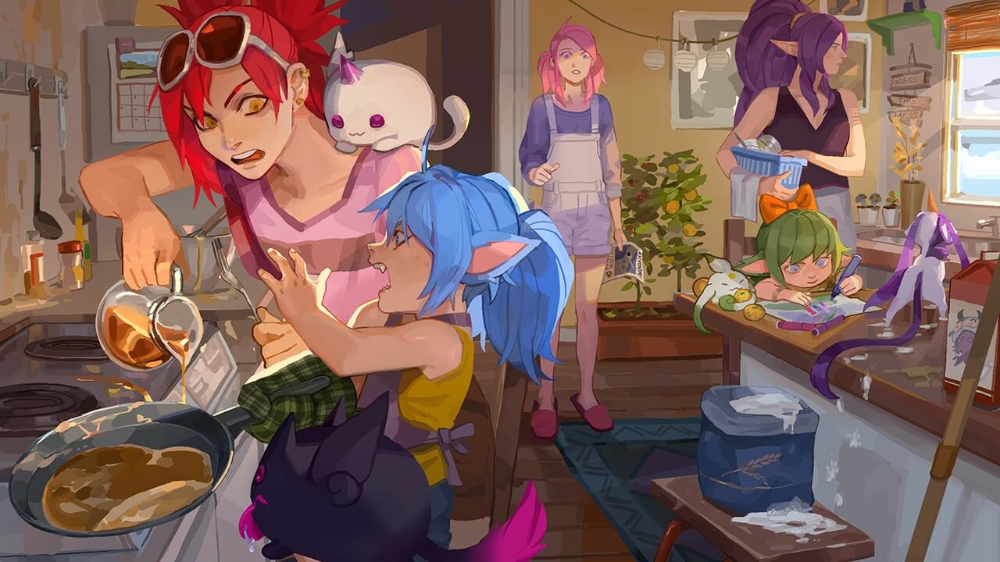

CAPITULO 1
Consejo de las guardianas de las estrellas
—¿Vienes con nosotros?
Jinx está tirada en una tumbona de plástico en el jardín mientras Shiro y Kuro se echan una siesta en el césped. Es imposible saber si me ha escuchado. Unas gafas de plástico exageradamente grandes cubren sus ojos y gran parte de sus cejas. Tiene un auricular en su oído izquierdo, pero veo otro colgando por el reposabrazos.
Está claro que me ha escuchado.
—Eh, ¿vienes adentro? Vamos a empezar.
Jinx se mete otro chicle fluorescente en la boca y mastica ruidosamente, estallando pompas con los dientes; después vuelve a hacer otra pompa grande y rosa. Cuando la pompa es lo suficientemente grande como para tapar sus gafas, se la vuelve a meter en la boca con un estallido.
—El verano no va a durar eternamente, Lux —dice sin alzar la vista. Cruza los brazos detrás de la cabeza. En el reflejo de sus gafas veo pasar nubes con forma de pluma—. Hay que disfrutar del sol antes de que se vaya.
Hace caracoles con la punta de su larga y roja trenza, retándome a darle una razón de peso por la que entrar.
—Tienes razón —digo yo. A ella le encanta pensar que tiene razón—. El verano casi ha terminado. Creo que deberíamos charlar sobre... cosas. Ya sabes, antes de que volvamos a clase.
Jinx frunce los labios y explota una pompa.
No debería haber mencionado las clases. Con eso la he perdido.
—Bueno, supongo que no quieres ninguno de los helados que ha traído Poppy... —digo, probando una táctica diferente.
Jinx se incorpora, extendiendo el reposabrazos. Kuro se sobresalta, bosteza y, maliciosamente, se propone despertar a Shiro, que sigue durmiendo en el césped. Jinx se sube las enormes gafas a la cabeza, y quedan como si dos estrellas gigantes de plástico saliesen disparadas de sus trenzas.
—¿Helados?
—Sí —digo mientras entro en la casa—. Tienen forma de cohete.
Cierro la puerta corredera de cristal y camino hacia la cocina. Cinco segundos después oigo cómo se abre y se cierra la misma puerta.
Gracias a las estrellas. Por mucho carácter que tenga Jinx, es bastante predecible cuando se trata de postres. Y de munición.
Mi paz es momentánea. Cuando entro en la cocina, Poppy está de pie en una silla frente al fogón, dándole la vuelta a las tortitas. Por el ángulo de sus brazos y la forma en que sujeta la espátula de metal, es obvio que está muy concentrada. Hay un reguero de masa y sirope de la nevera a la encimera.
—Ehm, Poppy, ¿qué está pasando aquí? He estado fuera cinco minutos —digo mientras Jinx se abre paso y va directa al congelador.
—Lulu dijo que tenía hambre —dice Poppy por encima del hombro. Se encoge de hombros y vuelve a concentrarse en darle la vuelta a la fina masa—. He hecho tortitas.
Lulu está en la mesa de la cocina, dibujando atentamente con una mano y con la otra dando bocados a las tortitas, sin importarle lo que pasa a su alrededor. Pix mordisquea un rotulador verde sin tapa. Lulu le rasca la cabeza sin apartar la vista de su obra.
—Suena bien, piltrafa.
Jinx le da una palmada a Poppy en la espalda y se sienta en una de las sillas mientras chupetea el helado con forma de cohete.
—¿Me haces uno con forma de estrella? No, espera, ¿uno con forma de misil? Ahh, ya sé, ¿y un misil con forma de estrella? ¡Necesito virutas de arcoíris!
—Anda, mira quién ha venido con nosotras —murmura Poppy mirando al fogón.
Caos. Caos absoluto. Hay masa de tortitas en el techo. ¿Cómo se supone que vamos a salvar al universo si ni siquiera podemos comportarnos? Janna está lavando en silencio el montón de platos que Poppy ha creado. Está mirando por la ventana frente al fregadero. Céfiro está sentado en la encimera junto a ella intentando lamer el sirope de sus zarpas.
—Bueno... —Me abro paso por el poco espacio que queda en la cocina—. Creo que deberíamos hablar sobre el próximo curso. Las clases están a punto de empezar y...
—Eh, ¿qué estás dibujando, Luppy? —Jinx se inclina por encima del hombro de Lulu y le roba un bocado de tortita con otro tenedor. Tiene tan pocas ganas de pensar en el futuro que incluso fingirá interés en Lulu para no tener que hacerlo. Intento que no se escuche mi suspiro.
Vuelvo a empezar.
—Como iba diciendo, tenemos...
—Es la lluvia de estrellas —interrumpe Lulu, sin preocuparse de que hubiera palabras saliendo de mi boca—. Las estrellas nuevas están de camino.
Sin alzar la vista, le pasa un papel a Jinx, que está al otro lado de la mesa. Un pegote de nata y virutas gotea de la tortita de Jinx y cae en el papel mientras le echa una ojeada. Sonríe y lo deja en la mesa. Veo que el papel contiene más de diez palabras y una sola imagen, así que Jinx ni se molesta.
Me detengo detrás de Lulu y miro detenidamente por primera vez lo que nuestra artista ha dibujado. Es un campo con árboles en los extremos. En el campo estamos las cinco mirando al cielo nocturno. Janna es la alta y violeta, Poppy tiene su martillo, y no es difícil distinguir las trenzas rojas de Jinx. Supongo que yo soy la que es rosa y redonda. ¿De verdad tengo los pelos así?
—¿Esta eres tú? —pregunto señalando a la del pelo verde en el prado de luciérnagas verdes y negras. Lulu asiente, mordiéndose el labio por la concentración mientras añade sombras al azul oscuro del cielo. Hay más colores entre las estrellas dibujadas.
—¿Y estas? —pregunta Jinx, señalando los puntos de colores.
—Estrellas nuevas, por supuesto —dice ella, poniéndole los ojos en blanco a Jinx. Lulu levanta la mirada hacia mí—. ¿Podemos irnos?
—Aquí no hay estrellas nuevas —dice Poppy mientras le da la vuelta a otra tortita.
Se escucha un fuerte estrépito en el fregadero cuando Janna deja caer un plato.
—Perdón —tartamudea mientras lo coge.
Me pongo a su lado. A través de la ventana de la cocina veo que las escasas nubes han desaparecido, dejando un cielo raso de verano. En el fregadero, Janna pasa lentamente la esponja alrededor del borde del plato.
—Buena parada —digo yo, ofreciéndole a Janna un trapo—. Los resbaladizos son los más difíciles de sujetar.
Janna me mira y vuelve a mirar al plato que estaba lavando. Sus mejillas están rojas, traicionando su apariencia distante. Algo no va bien.
Asiente y coloca el plato extralimpio en el escurridor. Se coloca un mechón lavanda tras la oreja y coge otro plato lleno de sirope del montón.
Sí, definitivamente algo no va bien.
Jinx, distraída como siempre, sigue atiborrándose de tortitas con sirope, alternando capas con nata y virutas.
—Ya sabes cuánto odio estar de acuerdo con el retaco peliazul —dice Jinx mientras se embute un tenedor hasta arriba en la boca—. Pero, Lups, somos nosotras contra todo lo malo que la galaxia tiene que ofrecer.
Lulu deja su lápiz, coge el papel y me lo da. Lo cojo y limpio el chorretón de nata y virutas de Jinx con un trapo, dibujando un rastro de arcoíris en la parte superior del papel.
—"Lluvia de estrellas del campamento de verano Targon. Observad la lluvia de meteoros. Escapaos de la ciudad y conoced algunas estrellas nuevas. Juegos y diversión. La última oportunidad de divertiros este verano" —leo en voz alta—. Está organizada por la clase de astronomía de la universidad y abierta a todos los estudiantes del instituto local.
Levanto la mirada. Nadie está escuchando. Lulu está dibujando otra vez. Poppy y Jinx están apilando más y más tortitas en sus platos, decididas a ver quién puede comer más. Puedo ver la cara de Janna en el reflejo de la ventana. Otra vez está en las nubes.
El papel se aplasta en mi mano. Dejo de apretar, avergonzada de la fuerza con la que lo hago. El plazo para inscribirse al campamento termina hoy.
—Última oportunidad —me digo a mí misma. Miro a las chicas; todas están a lo suyo. Esto no les va a gustar. Pero yo soy la capitana. Esto les vendrá bien—. Nos vendrá bien —susurro, convenciéndome de ello.
—Haced las maletas, señoritas —digo en voz alta, con una brillante sonrisa en la cara. La jovial seguridad es una fachada tanto para mí como para ellas. Todas levantan la mirada, inseguras de lo que va a ocurrir. Me saco el teléfono del bolsillo y empiezo a marcar el número del papel—. Vamos a darle la bienvenida a las nuevas estrellas.